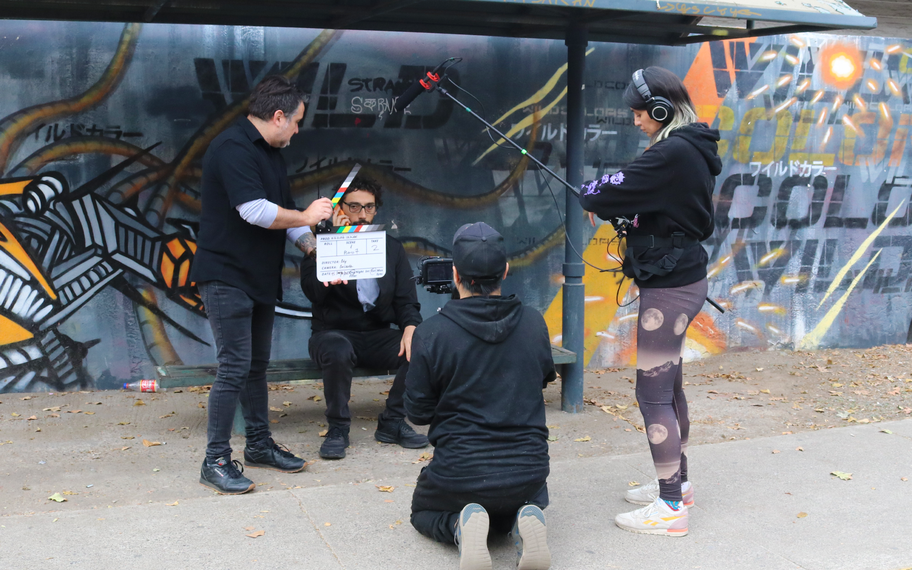

Servicios
Desarrollamos identidades digitales mediante un enfoque integral que combina:
- Estrategia y Storytelling: Definición de líneas visuales y tonos comunicacionales que respetan la esencia de cada proyecto.
- Diseño Creativo: Creación de contenidos, piezas gráficas y recursos visuales adaptados a cada plataforma.
- Planificación y Gestión: Redacción, planificación mensual y adaptación de contenidos para asegurar un impacto coherente y constante.
- Asesoría Especializada: Acompañamiento en difusión, lanzamientos y optimización comunicacional para potenciar el alcance y la interacción.

